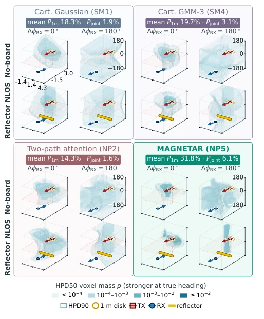
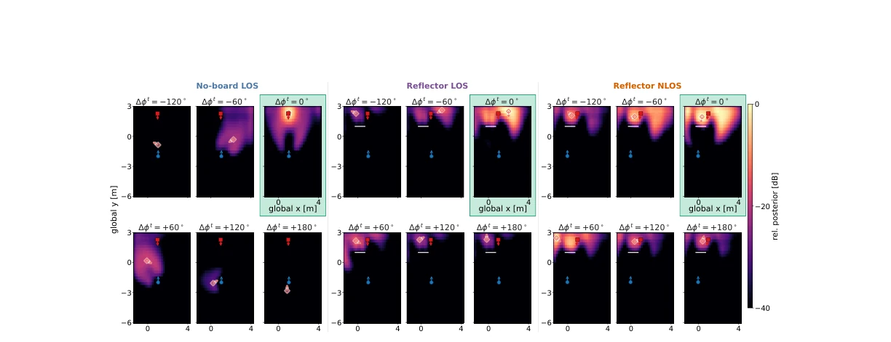
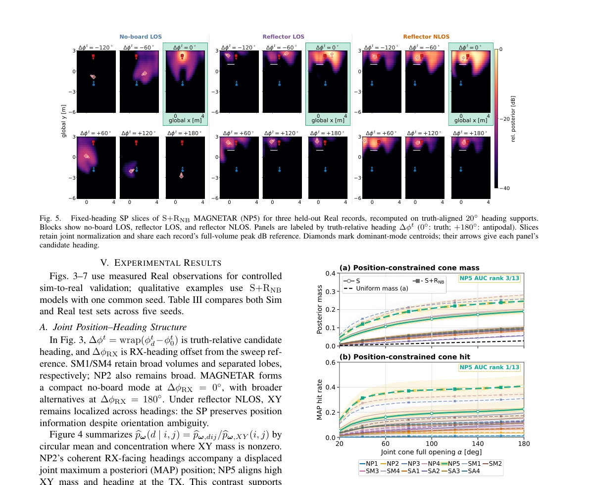
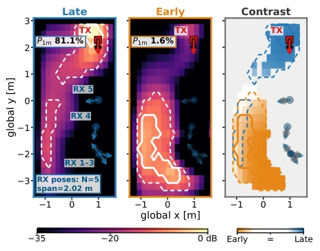
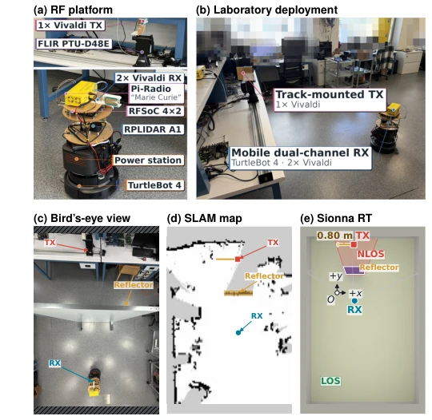

Fig. 1. Overview of Multi-Arrival-Guided Neural Estimation over Transmitter-Pose Alternatives from Radio (MAGNETAR) for transmitter (TX) pose inference. (1–2) A receiver (RX) records a two-channel radio-frequency (RF) in-phase/quadrature (IQ) snapshot; multipath estimation yields y as ranked angle of arrival (AoA) and signal-to-noise ratio (SNR) pairs. (3) Each candidate pt dij pairs XY position xt ij with heading ϕt d (planar yaw); the known layout L and RX pose pr determine candidate line-of-sight (LOS) or blocked non-line-of-sight (NLOS) visibility. (4–5) Spatial and heading features form Zd (24 channels for K = 2 retained arrivals), which a shared 2D U-Net maps to score plane ℓd. (6) One softmax over all XY–heading candidates yields the spatial posterior (SP). Horizontal axes give TX p
Fig. 4. XY marginal and conditional-heading field for the four S+RNB designs in Fig. 3, using one held-out no-board Real record and the same seed. Background is bpω,XY in peak-relative dB. Arrows show mean TX heading; opacity and width show circular concentration. Orange marks the joint posterior mode; red/blue mark TX/RX. Labels give its XY error. Pale contours: −25, −20, −15, −10, −6, −3 dB.

Fig. 3. Real SP volumes for four representative S+RNB designs (Table I), using one common seed and 18 × 33 × 33 support. Rows show no-board reference and held-out reflector NLOS; columns show RX offsets ∆ϕRX = 0◦, 180◦. Height is truth-relative TX heading. Dark 50% highest posterior density (HPD) voxels use shared mass bins; pale envelopes show 90% HPD. Emphasis marks the nearest truth-heading bin. Badges average four cases: P1m is mass within 1 m of truth XY over all headings; Pjoint also requires the nearest truth-heading bin.

Fig. 5. Fixed-heading SP slices of S+RNB MAGNETAR (NP5) for three held-out Real records, recomputed on truth-aligned 20◦heading supports. Blocks show no-board LOS, reflector LOS, and reflector NLOS. Panels are labeled by truth-relative heading ∆ϕt (0◦: truth; +180◦: antipodal). Slices retain joint normalization and share each record’s full-volume peak dB reference. Diamonds mark dominant-mode centroids; their arrows give each panel’s candidate heading.

Fig. 6. Held-out Real position-constrained cone mass (a) and joint-MAP hit rate (b). Both require XY error ≤1 m and bearing and TX-heading errors ≤α/2; (b) tests the global joint MAP. For 13 designs under S and S+RNB, curves and bands show domain-, protocol-, and site-balanced mean ± sample standard deviation over five seeds. The uniform reference applies only to mass. Codes follow Table I.

Fig. 7. Measured-Real fusion illustration for N = 5 S+RNB MAG- NETAR (NP5) SPs under the shared-heading approximation. Solid and dashed contours mark 50% and 90% XY HPD mass, respectively. Contrast is (Qlate −Qearly)/(Qlate + Qearly) (Late: blue; Early: orange).
其他图片Other Figures

Fig. 2. Hardware, site, and simplified room geometry. (a) RF acquisition uses one TX and two RX Vivaldi antennas, a Pi-Radio two-channel Frequency Range 3 (FR3) software-defined radio (SDR) kit (“Marie Curie”), and an RF system-on-chip (RFSoC) 4×2 board. SLAMTEC RPLIDAR A1 light detection and ranging (LiDAR) provides 2D SLAM measurements; the track and FLIR PTU-D48E pan–tilt unit set TX position and heading; the power station and TurtleBot 4 provide untethered RX power and mobility. (b,c) Laboratory and bird’s-eye views. (d) SLAM map defining the room abstraction. (e) Aligned Sionna ray-tracing (RT) scene [20] with the middle reflector, TX track, RX pose, candidate LOS/NLOS regions, and reflected paths; axes define the measurement frame.